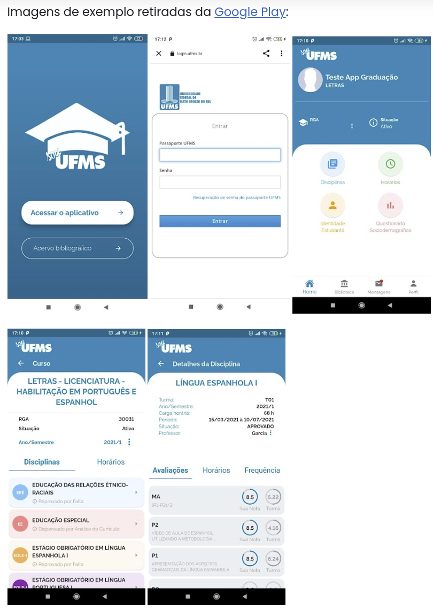

Disciplinas
INTERFACE HUMANO-COMPUTADOR Concluído
Materiais
Neste módulo, você aprendeu sobre como planejar uma avaliação e depois como avaliar interfaces de usuário.
Agora você irá realizar uma inspeção heurística na interface de usuário do app Sou UFMS para identificar problemas de usabilidade com base nas heurísticas de Nielsen. Isso te ajudará a desenvolver suas habilidades de avaliação crítica de design e de identificação de áreas de melhoria.
Siga os passos abaixo para elaboração e entrega da atividade:
Conteúdo
1) Leia o texto-base do módulo.
2) Acesse a loja de aplicativos do seu smartphone e instale o app Sou UFMS (caso não o tenha instalado ainda).
3) Avalie as telas do app: inicial, login, home, curso, detalhes da disciplina e horários.
Imagens de exemplo retiradas da Google Play:
4) Execute a avaliação, preenchendo o modelo: link.ufms.br/modelo-ihc (acesse com seu e-mail institucional e clique em “Usar modelo” para criar uma cópia).
- Há uma página com orientações e heurísticas (Guia) e outra para inserção dos resultados (Relatório).
https://lh7-us.googleusercontent.com/2R-nBY5pqm3lqeSFN4QmMzV4T3dWNOnnhrvPta-_WfpGdRirT40upeb2ScVA50MOJWzT38UJPuAXI1pcvQO4BEtyiR9jWaTw5I745Kacj_6cKNgRO7JW8J3JR4C4nrKunnXSato3JHSFzBe2B0S3_4o
5) Exporte o arquivo PDF e envie-o no espaço da tarefa.
- Clique em Arquivo > Fazer download > PDF:
https://lh7-us.googleusercontent.com/9mVzeQPQv0JVNjCX1W0PGSy97Y0h_WTA6kZL_7yUA5FfIqRbDExmXBTqqv1J31BnRXAuhb0UPxOoTnM8p3ZfJeZeSD679Olj5fUuiDQVSxLwOzJh-DSpYI5Zv_zR-z3Kalrmq_PJSvSw4C4VQfhqO0Q
- Em “Exportar”, selecione “Pasta de Trabalho”; em “Seleção”, selecione todas as páginas. Clique em “Exportar” para gerar um PDF com todas as páginas da planilha.
https://lh7-us.googleusercontent.com/NtNq9hnxu1_hbW9iitFbVE7rtnsJgTKBFw9UCj9xW4bolFacn-c2QR6b1fpTuBijPTBr8WBW5qSfPBnnoc9CYFFOWSGJiMtYKeLOSgrhwoqIPQi6-Fj5mow1EMxcbBVx_HTAh3kWdtbGZAfka5GuZmY
Resolução:
Problemas de usabilidade e áreas de melhoria.Visibilidade do status do sistema:
- Seria interessante adicionar um indicador visual de carregamento nas páginas que levam algum tempo para abrir, como as que fazem downloads de pdfs, ou direcionam para links externos.
Compatibilidade entre o sistema e o mundo real:
- Fornecer explicações sobre o significado de palavras como 'Passaporte UFMS' no primeiro acesso ou em cessões de ajuda, pois de principio confunde usuários novos, como aconteceu comigo. rsrs
Controle e liberdade do usuário:
- Adicionar botões de navegação visíveis em todas as páginas do App, permitindo voltar e ou avançar com mais facilidade.
Consistências e padrões:
- Tornar os comportamentos de links mais previsíveis ou informar ao usuário o que vai acontecer ao clicar se for para baixar um pdf ou abrir um link externo.
Prevenção de erros:
- Mostrar mensagens de erro antecipadas ou prevenir o envio de formulários se os campos não atendem os critérios específicos.
Reconhecimento ao invés de recordação:
- Adicionar explicações curtas ou ícones que indiquem a funcionalidade real de cada botão.
Flexibilidade e eficiência de uso:
- Implementar atalhos para usuários experientes, para acessar paginas recentes ou favoritos.
Designer estético e minimalista:
- O designer está ótimo, mas pode ser mais atrativo com elementos visuais
Ajudar os usuários a reconhecer, diagnosticar e corrigir erros:
- Implementar mensagens de erro detalhadas, indicando o que está errado.
Ajuda e documentação:
- Criar uma pagina de ajuda, com informações básicas sobre como acessar e usar o App e suas funcionalidades.
1- Adicionar indicadores de status e carregamento mais claros.
2- Melhorar o feedback do sistema para erros, como login incorreto.
3- Oferecer uma navegação mais intuitiva com botões de retorno.
4- Tornar os comportamentos de links mais consistentes.
5- Fornecer documentação ou uma área de ajuda acessível.